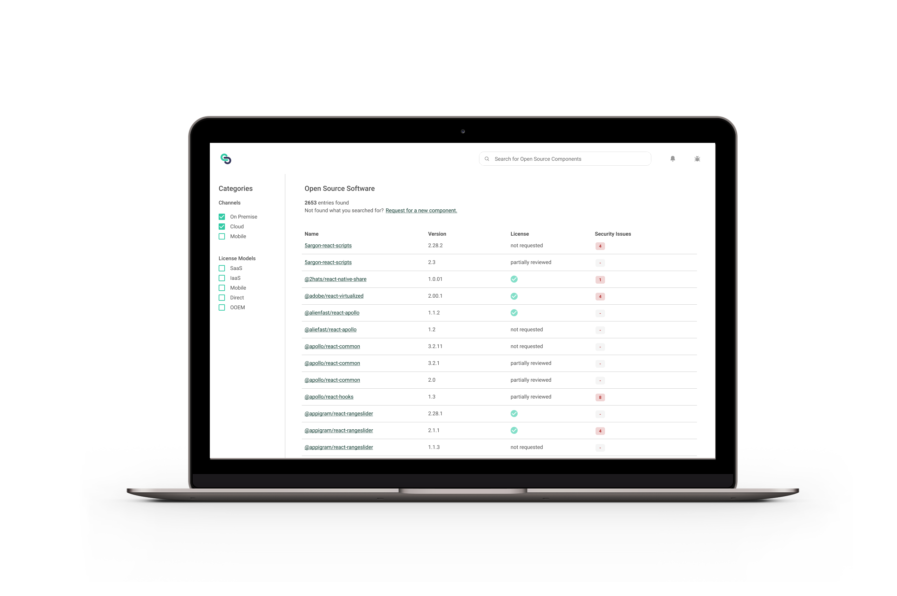

Internal Project
UI & UX Design
Disclaimer: Some design elements have been visually adapted in this portfolio for illustrative purposes.
When building software developers often relies on open source & 3rd party software to be able to reuse existing components or APIs. While implementing and using it is usually pretty easy it becomes very complex when talking about license & security risks for large enterprises. Currently development teams need to request the usage via mail for called software which triggers a time consuming process.
With the new self-service tool developers can now quickly check if the open source / 3rd party software they want to use is already used by other teams and have transparency about potential risks